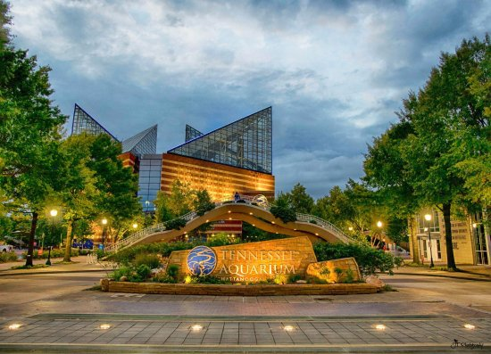

Chattanooga, TN
The Tennessee Aquarium is a non-profit public aquarium located in Chattanooga, Tennessee,
United States. It opened in 1992 on the banks of the Tennessee River in downtown Chattanooga,
with a major expansion added in 2005. The aquarium, which has been accredited by the Association
of Zoos and Aquariums (AZA) since 1993, is home to more than 12,000 animals representing
almost 800 species.